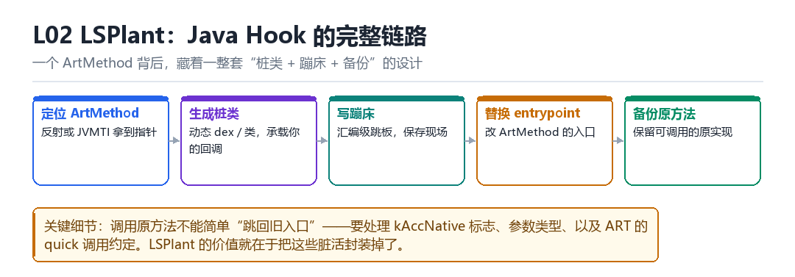

LSPlant Java Hook 原理
ArtMethod、动态桩类、trampoline、backup、entrypoint、原方法调用
一个 ArtMethod 背后，是一整套“桩类 + 蹦床 + 备份”的设计。
2.1 五个环节

- 定位 ArtMethod：反射或 JVMTI 拿到指针。
- 生成桩类：动态 dex / 类，承载你的回调逻辑。
- 写蹦床：汇编级跳板，保存现场、调用回调、恢复现场。
- 替换 entrypoint：改 ArtMethod 的入口指针。
- 备份原方法：保留一个可调用的原实现（backup）。
2.2 为什么不能“直接跳回旧入口”
因为 ART 的调用约定不是简单的函数调用：参数可能在寄存器与栈之间按特定规则分布，还有 kAccNative 标志、以及 quick 调用与 interpreter 调用的差异。所以备份方法要经过专门处理，才能被安全调用。
| 细节 | 不处理的后果 |
|---|---|
| kAccNative 标志 | ART 走错调用路径，崩溃 |
| 参数类型 | 基本类型与对象类型传递方式不同 |
| synchronized 方法 | 锁语义丢失，出现竞态 |
| @CriticalNative | 跳过了部分检查，处理更特殊 |
2.3 检测视角
1. Method.getModifiers() 里是否多了 native
2. 该类的 dex 是否来自可疑的 dexElements
3. 方法调用耗时分布是否异常（蹦床有开销）2.4 本章自测
- 五个环节里，哪一步最容易出错？
- 为什么备份方法不能简单指向旧 entrypoint？
- synchronized 方法被 hook 后，锁语义还在吗？
- 哪三件事不用读内存就能发现 Java Hook？
2.11 深入：蹦床（trampoline）到底做什么
蹦床是一小段汇编：保存会被破坏的寄存器、准备参数、调用你的 Java 回调（或 native 实现）、恢复寄存器、然后跳回原方法或返回。它的正确性完全依赖“对 ART 调用约定的精确理解”。
trampoline:
stp x29, x30, [sp, #-16]!
// 保存参数寄存器 x0-x7
bl my_hook_handler
// 恢复寄存器
ldp x29, x30, [sp], #16
b original_entry_or_return2.5 实战：hook 之后方法变慢很多，怎么办
- 确认是不是每次调用都要走一遍 Java 回调（开销大）。
- 把热点逻辑移到 native 侧，减少跨语言调用。
- 只在必要时 hook（比如只在启动阶段）。
- 如果只是想“观察”，考虑用 trace 而不是 hook。
2.6 原理推演：为什么需要“桩类”而不是“直接写汇编”
因为 hook 回调通常要访问 Java 对象（参数、this、返回值）。如果全部用汇编处理，就要手动处理 JNI 引用、GC、异常——成本极高。用桩类可以把这些交给 ART。
| 实现 | 处理 Java 对象 | 复杂度 |
|---|---|---|
| 纯汇编蹦床 | 手动 | 极高 |
| 桩类 + 蹦床 | ART 代劳 | 高 |
| 纯 Java 替换 | ART 代劳 | 低（但受限） |
所以主流框架都是“桩类 + 蹦床”的组合：蹦床负责“切换”，桩类负责“逻辑”。
2.7 数据细节：一次 hook 涉及的内存对象
| 对象 | 位置 | 生命周期 |
|---|---|---|
| 原 ArtMethod | dex 的 class_def 区 | 与类同生命周期 |
| 桩 ArtMethod | 动态生成的类 | 与 ClassLoader 同 |
| 蹦床代码 | 匿名可执行页 | 手动管理 |
| 备份方法 | 动态类或匿名页 | 手动管理 |
2.8 深入：为什么“备份方法”要单独存在
因为你要“既能拦，又能调原逻辑”。如果只替换入口、不留备份，那原逻辑就永远执行不到了。备份方法的作用就是“让原逻辑还能被调用”。
| 实现 | 能否调原方法 | 代价 |
|---|---|---|
| 不备份 | 不能 | 低 |
| 备份 ArtMethod | 能 | 中 |
| 蹦床里恢复原入口 | 能 | 高 |
主流做法是第一种：复制一份 ArtMethod，把 entrypoint 指回原实现。这样调用备份就等于调用原方法。
2.9 深入：桩类为什么要“动态生成”
因为你要 hook 的方法签名是运行时才知道的。预先写死的类覆盖不了任意签名，所以必须在运行时“按目标方法的签名，生成一个匹配的类”。
1. 读目标方法的签名（参数类型、返回类型）
2. 构造一个同签名的类（dex 或 native）
3. 让它的实现转调你的回调
4. 把目标方法的 entrypoint 指向它2.10 实战：怎么确认“原方法调用”是通的
// hook 一个纯函数（无副作用），比如 String.length
// 在回调里调用原方法，比对返回值是否与不 hook 时一致一次普通调用落到了哪里
业务代码写下一行 tv.setText(s)，编译成 DEX 后是 invoke-virtual。ART 解释或执行这条指令时，做的事朴素得近乎粗暴：从方法的 ArtMethod* 里取出 entry_point_from_quick_compiled_code_，按调用约定摆好寄存器，然后跳过去。整个 Java Hook 的全部秘密，就是把这个指针换成别人。问题在于，换完之后原来的实现去哪了，谁来接住那些散落在寄存器和栈上的参数，以及怎么让 ART 别再用它自己缓存好的那份机器码。
LSPlant 的答案不是'改一行指针'，而是造一整套替身：一个动态生成的桩类、一段汇编蹦床、一份完整的 ArtMethod 副本。四样东西凑齐，才能既拦下调用又安全地调回原方法。少了任何一样，表现都不是'功能不生效'，而是随机崩溃——这恰恰是这类框架最难调的地方。
一个 ArtMethod 被改成了什么
- JNI 层 → 目标 ArtMethod：用
art::ArtMethod::FromReflectedMethod从反射拿到的Method解包出真实地址；结果是拿到一个可写的、长度等于art::ArtMethod大小的结构体。 - 框架 → 动态桩类：生成一份极小的 DEX，里面有一个与目标方法签名一致的 stub，经
InMemoryDexClassLoader加载；结果是回调逻辑有了一个 ART 认得的宿主类。 - 框架 → 原结构体：
memcpy出一份完整的 ArtMethod 作为 backup，把它的declaring_class_指向桩类、清掉 native 标志、恢复原入口；结果是原实现有了一个能被反射安全调用的独立身份，GC 不会把两个方法搅在一起。 - 框架 → 目标 access_flags_：给目标加上
kAccNative（及 fast-native 变体），把 quick 入口换成art_quick_generic_jni_trampoline，entry_point_from_jni_指向蹦床；结果是 ART 认为这是一个 JNI 方法，乖乖走带完整参数封送的路径。 - 蹦床 → 回调分发器：保存现场后把参数转发进 C++ 分发器，再转给 Java 层的
beforeHookedMethod；结果是最外层的模块拿到MethodHookParam，可以读参数、改参数、直接返回。 - 分发器 → backup：模块不
returnEarly时，分发器通过反射包装调用 backup；结果是原方法在正确的调用约定下执行，返回值沿链回传，锁语义与异常行为都还在。
第 3 拍值得停一下：backup 是副本，不是指针。因为目标 ArtMethod 接下来会被改成 native，若只留一个'旧入口地址'，ART 查 declaring_class_ 时拿到的已经是改过的那份，synchronized 的锁对象、@CriticalNative 的快路径、kAccNative 的参数封送全部会错位。复制整个结构体并给它换一个声明类，才是最省事的正确做法。
蹦床逐拍走一遍
- 调用者执行
invoke-virtual，ART 查ArtMethod，发现kAccNative，转入 generic JNI trampoline。 - trampoline 按 ABI 把 x0–x7 与栈上参数、以及
ArtMethod*一起交给entry_point_from_jni_处的蹦床。 - 蹦床保存 LR 与被调用者保存寄存器，建立可回溯的栈帧，然后跳进 C++ 回调分发器。
- 分发器组装
MethodHookParam（thisObject/args/result），按 priority 依次调用 before 回调。 - 若无人
setResult/setThrowable，分发器用反射包装调用 backup，把返回值写回param.result。 - after 回调逆序执行，蹦床恢复寄存器并返回；调用者看到的就是一次'正常'的方法调用。
这也解释了为什么 Java Hook 的开销不是固定的：一次调用走完六拍，比直接跳进 JIT 编译好的机器码多出参数封送、对象分配与至少两次跨层跳转。方法越热，这条增量在 p95 上越显眼——L03 的 deopt 和 L09 的时延侧信道，都是从这里长出来的。
用反射把改动照出来
// 在目标进程内执行（如模块 handleLoadPackage 里打日志）
Method m = Target.class.getDeclaredMethod("sign", String.class);
Log.d("probe", "native=" + Modifier.isNative(m.getModifiers()));
Log.d("probe", "mods=" + Modifier.toString(m.getModifiers()));
Log.d("probe", "decl=" + m.getDeclaringClass().getName());
Log.d("probe", "loader=" + m.getDeclaringClass().getClassLoader());
// 干净基线：native=false，decl=Target 自身，loader=App 的 PathClassLoader
// 被 hook 后：native=true 是 LSPlant 路径的强信号；decl 仍是 Target，不要被它骗了看到什么算成功：hook 前 native=false，hook 后 native=true，且 loader 仍是 App 的 PathClassLoader。看到什么算失败：native=true 但 decl 变成了一个陌生包名——说明你查的是 backup 的包装而不是目标方法；或者 native 一直是 false 而回调却在跑，那多半走的是inline hook / interpreter 的另一条实现，别拿这张表硬套。补一条 adb logcat -s probe:V 抓输出，并留一份未注入时的对照日志，否则 native=false 到底是'没 hook 上'还是'本来就是 native'，分不清。
| ArtMethod 字段 | 原始作用 | Hook 后的变化 | 漏改的后果 |
|---|---|---|---|
| declaring_class_ | 指向声明类（GcRoot） | backup 改指桩类 | GC 与反射查错类、锁对象错 |
| access_flags_ | 修饰符与 native 标志 | 目标加 kAccNative | ART 走错调用路径，参数错位 |
| dex_method_index_ | DEX 内方法索引 | backup 保留原值 | 栈回溯与异常信息失真 |
| entry_point_from_quick_compiled_code_ | 编译后入口 | 换成 JNI trampoline | hook 完全不生效 |
| entry_point_from_jni_ | JNI 实现地址 | 指向蹦床 | 调用落空或直接 SIGSEGV |
把这套'替身 + 蹦床'的结构与第三部 F06 的 Frida 默认 Hook 对读，会发现两者只是取入口的层次不同：Frida 在 ArtMethod 之上用 implementation 换掉整段行为，LSPosed 在 ArtMethod 之内换掉入口指针。第四部 M03 讲 Text Shadow 时那句'保留一份可执行原件、把跳转改到影子页'，与这里的 backup 是同一个思路搬到了 EL1。训练营 T02 要求从一个陌生 App 里挖出算法，第一件事往往就是先照出这张字段表，判断自己面对的是哪一种 hook 形态。